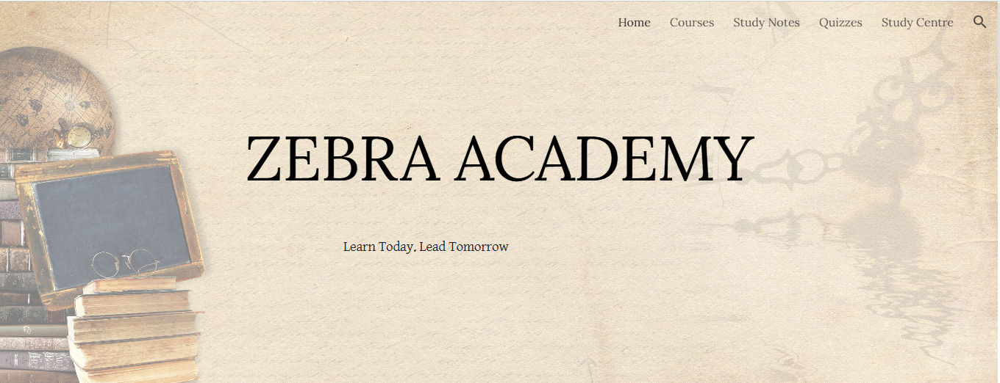

HTML & CSS
Learning the building blocks used to structure and style web pages.
LEARNING● PERSONAL PORTFOLIO
An aspiring software developer learning to build useful digital experiences, explore ideas, and turn problems into practical projects.
LEARN · CREATE · GROW
01 / ABOUT
I’m Bishir G., an aspiring software developer interested in technology, websites, and building useful tools. This portfolio is where I share my learning journey and the projects I create along the way.
I’m continuing to develop my skills step by step. My goal is to become a software developer who creates useful, reliable, and easy-to-use digital experiences.
Let's connect ↗02 / SKILLS & INTERESTS
Skills develop one step at a time.
Here are some areas I’m interested in.
Learning the building blocks used to structure and style web pages.
LEARNINGA skill I’m working toward to make websites interactive and dynamic.
LEARNING GOALPractising how to create, publish, and improve websites using digital tools.
IN PROGRESSLearning to break tasks into smaller steps and work through them carefully.
ALWAYS GROWING03 / SELECTED PROJECTS
A growing collection of work.
More projects will be added soon.

01 / EDUCATIONA study website project for organizing learning materials and quizzes for students.
VISIT WEBSITE ↗A personal website introducing my goals, learning journey, and projects.
PERSONAL PROJECTI’m building my skills step by step and will add more projects as I complete them.
04 / GET IN TOUCH
Have a question, a project idea, or just want to connect? Send me a message.
Email me ↗Contact: yawalezakkabishir@gmail.com